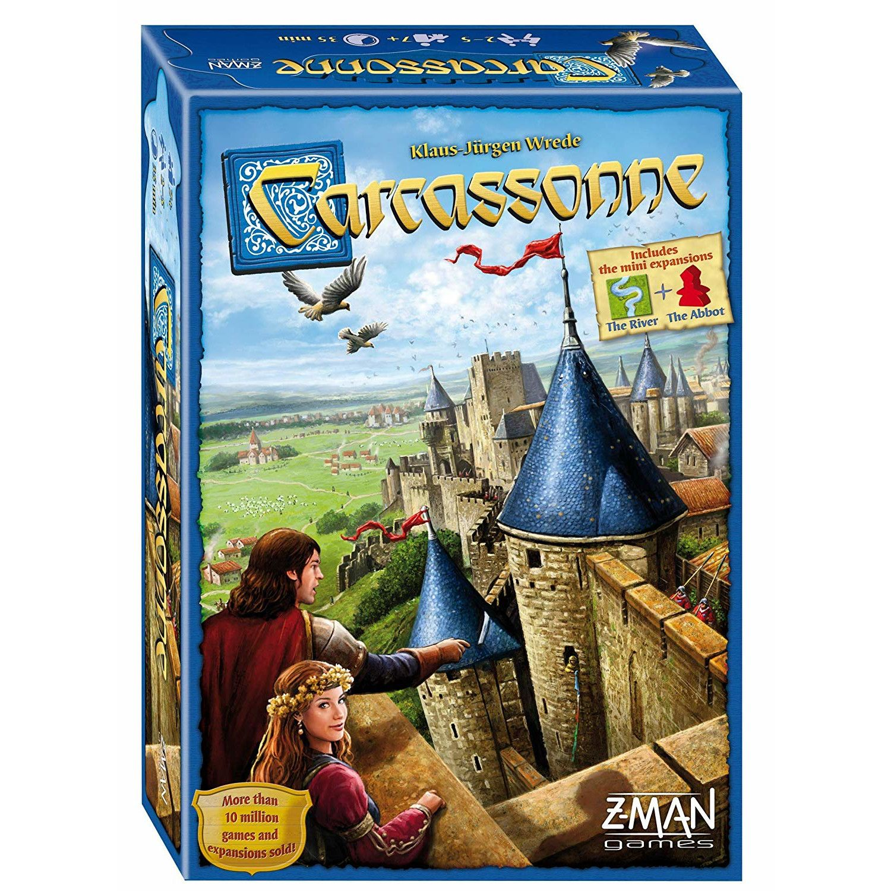

Carcassonne is considered to be an excellent "gateway game" by many board game players as it is a game that can be used to introduce new players to board games. The rules are simple, no one is ever eliminated, and the play is fast. A typical game, without any expansions, takes about 45 minutes to play. There is a substantial luck component to the game; however, good tactics greatly improve one's chances of winning